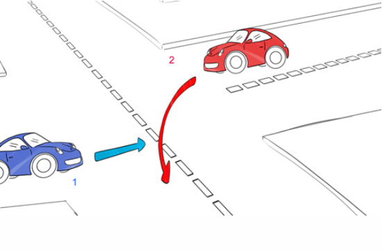
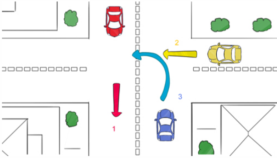
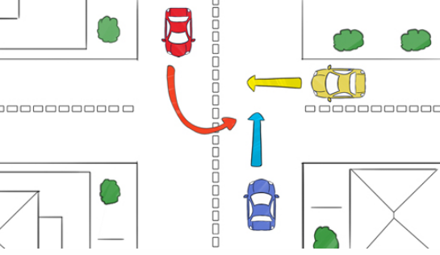
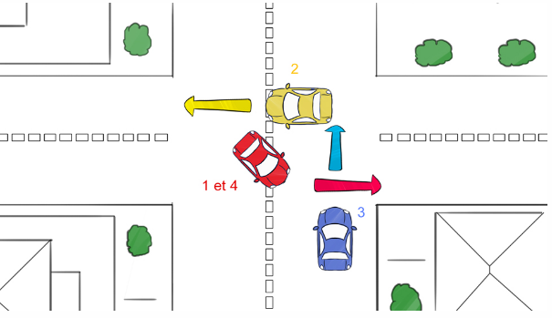

Dans cette premièr leçon on va decouvrir un premier type d'intersection qui est caracterisé par l'absence des panneaux
En l'absence de panneau, la règle à appliquer est celle de la priorité à droite.
Différents cas de figure sont possibles selon que vous allez tout droit ou que vous tournez. Voilà 4 exemples où vous êtes la voiture bleue :
Le véhicule d'en face veut tourner à sa gauche donc je suis à sa droite quand il tourne. C'est moi qui suis prioritaire en allant tout droit.
Je vais à gauche donc je laisse passer la voiture jaune directement à ma droite et aussi la voiture rouge qui se trouve en face car une fois que j'aurai tourné, celle-ci sera bien à ma droite
Cas le plus délicat : la voiture rouge est à la droite de la jaune. La voiture jaune est à la droite de la bleue. La voiture bleue est donc prioritaire sur la rouge mais doit laisser passer la jaune.
Dans ce cas, la voiture jaune avance jusqu'à la voiture rouge et la laisse passer. La voiture rouge passe avant la voiture jaune en premier puis avance jusqu'à la voiture bleue et la laisse passer. La voiture bleue passe en troisième et enfin la voiture rouge avance et finit en dernier son tournant.
il est interdit d'effectuer un dépassement dans une priorité à droite sauf d'un 2 roues (cyclistes et motos).
Pour détecter la présence d’une intersection sans panneau, votre regard doit balayer le plus souvent possible les bords droits de la route pour discernerles indices informels, c'est-à-dire tous les indices issus de l'expérience et du bon sens.
Accordez-donc de l'importance à ces éléments de l'environnement :
En cas de doute sur le régime de priorité d'une intersection, partez du principe que vous devez céder le passage et ralentissez.
Bon courage pour votre code !